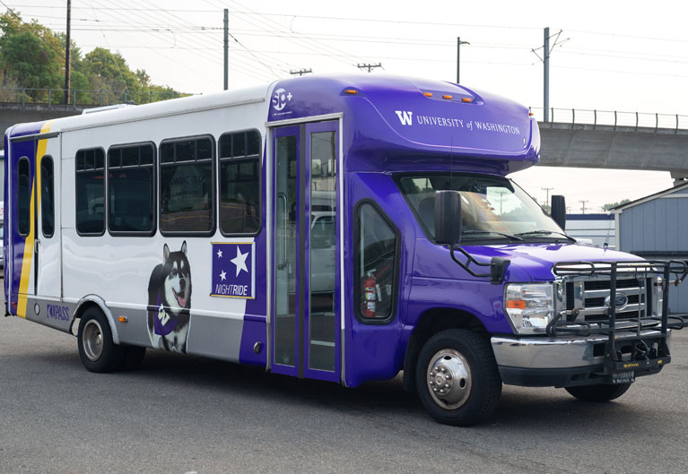
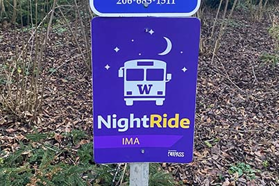
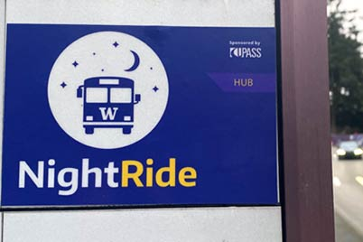

NightRide shuttles pick up passengers at one of eight scheduled stops around campus. After the Flagpole stop, the last scheduled stop on campus, shuttles deviate from the fixed route to drop off riders at their requested location within the East or West zone boundaries. To be dropped off in the East zone, riders need to be on an East zone shuttle. Similarly, to be dropped off in the West zone, riders need to be on a West zone shuttle. Riders can transfer from a West zone shuttle to an East zone shuttle or vice versa at the Flagpole stop. Review the Frequently asked questions for more information.
Shuttles pick up passengers from 8 p.m. until 1:34 a.m. for the East zone and from 8 p.m. until 1:39 a.m. for the West zone, Monday through Friday (excluding University holidays) during the Autumn, Winter and Spring quarters with extended service running until 3:30 a.m. the week before and the week of finals. Pick up time schedules for both zones are listed below.
NightRide shuttles are white and purple ADA accessible shuttle buses with “Transportation Services” written on one side and a Dubs image displayed on the other. An SP+ vendor logo is also visible above the front doors.
Except for the IMA and UW Tower stops, all stops share a King County Metro bus stop, (five of those stops are along Stevens Way), and are designated as NightRide stops by a decal posted on the bus schedule kiosk. The IMA and the UW Tower stops have full signage.
 Drivers open the shuttle doors at each stop and scan the area for potential riders before proceeding to the next stop. For stop descriptions, check out the route schedules for the East zone and West zone. You can also view the Zone map for a visual of the stop locations.
This is called a deviation, a rider’s requested drop off location within the zone boundaries (but not along the scheduled route). The service will only drop off at scheduled stops while traveling along the scheduled stops route. However, riders may remain on the bus and request a deviation at the Flagpole stop, the last scheduled stop on campus (East deviations from an East zone shuttle and West deviations from a West zone shuttle). After the Flagpole stop, East and West zone shuttles continue on to drop off riders in the East and West zones. (See service routes for the East zone and West zone.)
If you want to be dropped off at a scheduled stop in the East zone, you need to be on an East zone shuttle. If you want to be dropped off at a scheduled stop in the West zone, you need to be on a West zone shuttle.
You have two options:
All four NightRide shuttles service the East zone stops. So, if you board a West zone bus, you will get to all East zone stops by staying on board. Depending on where you board, it may mean riding the entire route to get to an East zone stop (for example, if you board at the HUB and want to go to the IMA).
UW Shuttles staff are available Monday through Friday from 7:30 a.m. to 4 p.m. at 206-685-3146 or at shuttles@uw.edu. During NightRide service hours you can call 206-300-9087 to reach the dispatch center.